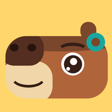
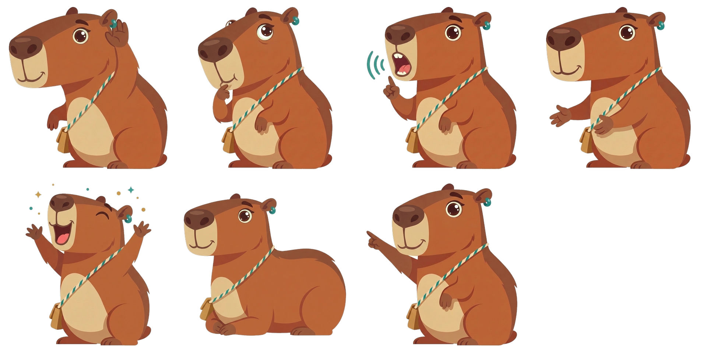
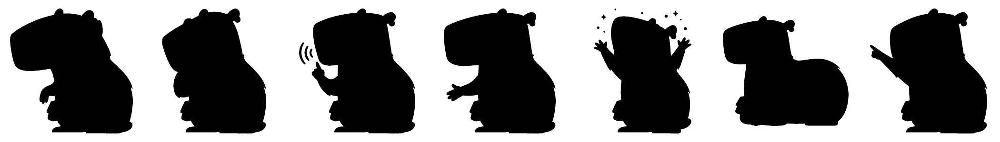
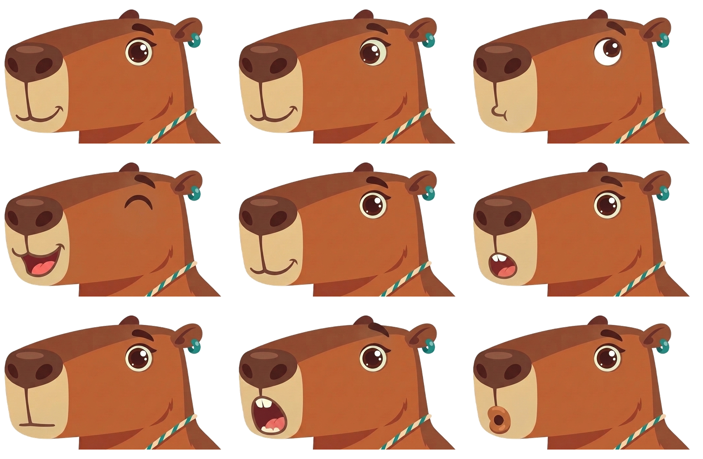
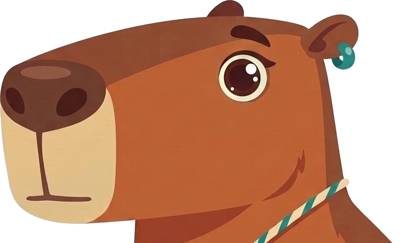
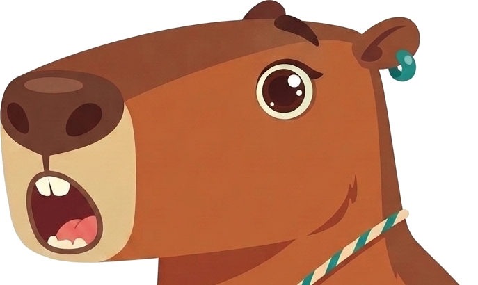
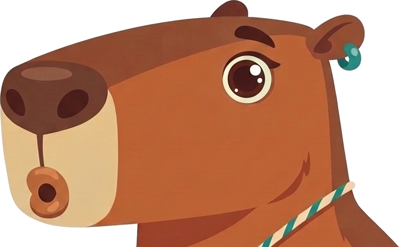
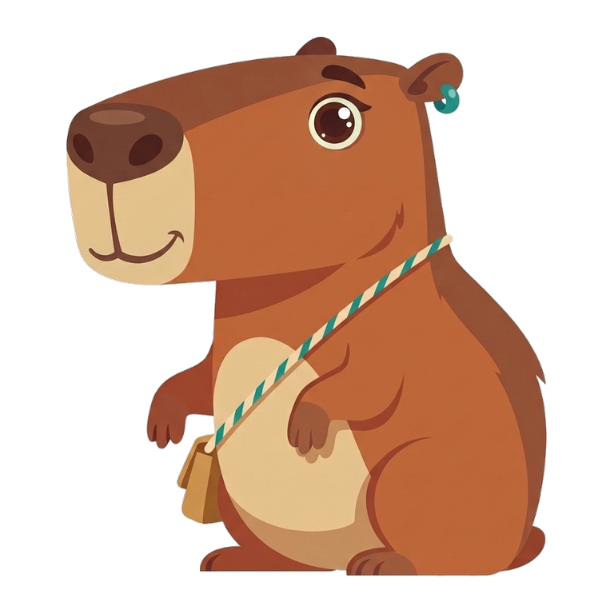

Five pairs. Each pair is one real Duolingo ABC lesson screen and one real Sound Out screen with Tilo placed into it. Both are cropped to the lesson area and shown at the same size. The A/B side is random. Pick the side where you would rather be taught to read, then press reveal. The key is derived from the files on disk and checked pixel for pixel when the pairs are built.

Six flat shapes on a solid sun-yellow field: long boxy head, nose pad, cream muzzle, one bright eye with a highlight, tiny high ear, and the teal bead as the single accent. Drawn as vectors by tools/make_icon.py.


Pairwise overlap (IoU) of the filled shapes is in tilo/silhouette_iou.json. Wait (low loaf), point (arm up), celebrate (arms up) and listen (head thrust forward) separate well. Think, model and try are still close to each other.




